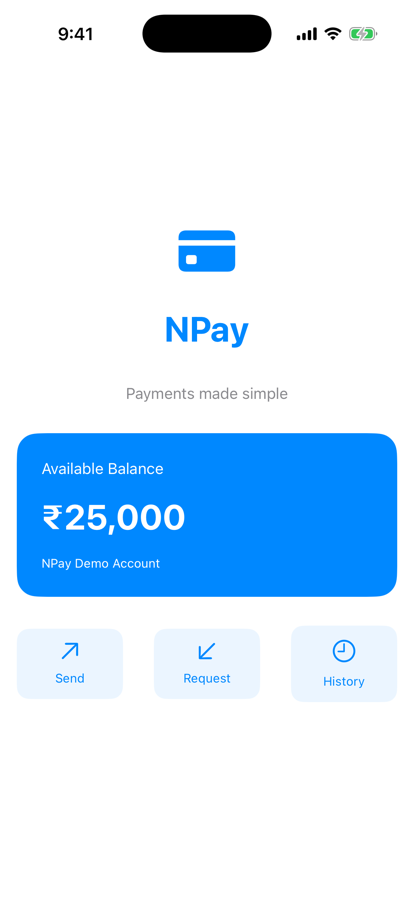
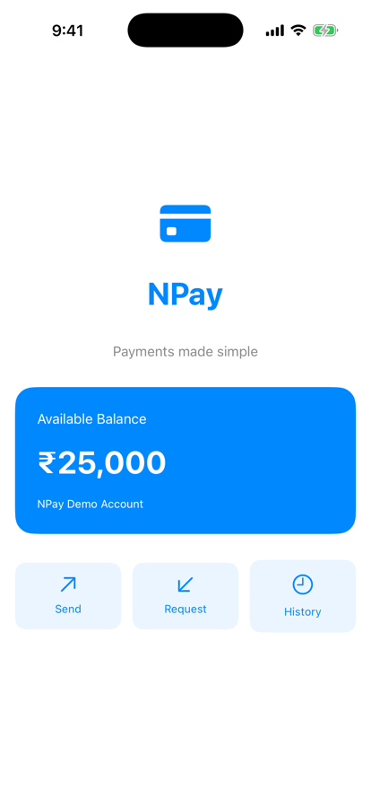

Unit 02 · Lesson 2.7
SwiftUI Button, Closures
& Event Handling
A user touches Send. How does iOS know which Swift closure to run?
Lesson 2.7 · Outcomes
By the end, you will be able to explain
Button’s initializers and its action closure
Why evaluating body doesn’t run the action
The path from a tap to your closure
Hit testing, contentShape, styles, disabled
A reusable button that takes a closure
Captures, ARC and a responsive main thread
Lesson 2.7 · Where we are
Today: NPay responds
Unit 02 · SwiftUI Fundamentals
BalanceCard and QuickAction, still static.TodayButtons: the quick actions run closures.Part 1
The milestone
Quick actions that respond
Part 1 · Our next NPay milestone (sections 1, 21)
Milestone 2.7: three working quick actions
- Send, Request, History become buttons
- Each runs a closure from ContentView
- Actions print; the balance stays ₹25,000
- Changing the screen: 2.8, @State

Before: Lesson 2.6

After: Milestone 2.7
Part 2
Button
A struct with a closure
Part 2 · Understand Button (section 2)
A title and an escaping action
Button("Send Money") {
print("Send Money tapped")
}init(
_ titleKey: LocalizedStringKey,
action: @escaping () -> Void
)| Part | Meaning |
|---|---|
Button | a generic SwiftUI struct |
"Send Money" | the title |
{ … } | trailing action closure |
@escaping | kept after init returns |
() -> Void | no arguments, no result |
- A closure is a value: store it, call it later
- Button stores one; calls it when activated
Part 2 · A custom label (section 7)
Two closures: action and label
Button {
print("Send tapped")
} label: {
VStack(spacing: 8) {
Image(systemName: "arrow.up.right")
Text("Send")
}
}action: what happenslabel: what it looks like, a@ViewBuilder
Button("Send Money") { … }:
Button<Text>
Button { … } label: { VStack … }:
Button<VStack<TupleView<(Image, Text)>>>
Button<Label>: Swift infersLabelfrom the closure
Part 3
Creation vs activation
body runs; the action waits
Part 3 · Does the closure run when body runs? (section 3)
Evaluation is not activation
struct PaymentView: View {
let tick: Int
var body: some View {
let _ = print("PaymentView.body evaluated (tick \(tick))")
Button("Send Money") {
print("Payment requested")
}
}
}PaymentView.body evaluated (tick 0)
… (tick 1) … (tick 2) … (tick 3)
"Payment requested": never printed
Part 4
From tap to closure
The event path
Part 4 · From finger tap to Swift closure (section 4) · conceptual
Six steps from glass to code
- UI interactions run on the main actor
- Keep actions short
Part 4 · Inspect the call stack (sections 13, 17)
Inside the existing process, on the main thread
Send tapped
main thread: true
0 closure #1 in StackView.body.getter
2 static MainActor.assumeIsolated(…)
3 ButtonAction.callAsFunction()
4 … AccessibilityButtonModifier.init(_:)
…
12 AccessibilityNode.accessibilityActivate()
13 activate(_:) ← our test code
Activated through accessibility, as VoiceOver does; a finger tap shows touch and gesture frames lower down. Frames vary by iOS version.
- Breakpoint on
print("Send tapped") - ⌘R, tap Send, ⌘7 for the stack
- LLDB:
bt,thread list
- Your closure, called by SwiftUI’s
ButtonAction - Same process: nothing rebuilt, nothing relaunched
Part 5
Hit testing
Which view gets the tap?
Part 5 · Hit testing and contentShape (sections 5–6)
Make the whole tile tappable
Button {
print("Send tapped")
} label: {
HStack {
Image(systemName: "arrow.up.right")
Text("Send")
}
.frame(maxWidth: .infinity)
.padding()
.contentShape(Rectangle())
}- Finds the interactive view at the touch point
- Uses the hierarchy and interaction regions
- Empty or transparent parts of a label may not respond
.contentShape(Rectangle()): the whole rectangle
Send 115 × 72 · Request 115 × 72 · History 115 × 78 pt
Part 6
Styles, disabled, accessibility
Presentation and access
Part 6 · Button styles (section 8)
.plain, .bordered, .borderedProminent
Button("Send Money") {
print("Tapped")
}
.buttonStyle(.borderedProminent)- Feedback, emphasis, shape
- Adapts to environment and state

iPhone 17 simulator, iOS 26.5
Part 6 · Disabled state and accessibility (sections 9, 19)
Say it’s unavailable; say what it does
Button("Send Money") {
print("Send requested")
}
.disabled(true)
Button {
print("Send requested")
} label: {
Image(systemName: "arrow.up.right")
}
.accessibilityLabel("Send money")Send Money: button, enabled: false
→ nothing printed
Request Money: button, enabled: true
→ Request requested
- Better than ignoring taps in the action
- Changes look and accessibility
- Icon only? Add
.accessibilityLabel - Text labels are clearer: an arrow could mean Send, Upload, Share
- Touch targets: about 44 × 44 pt or larger
Part 7
QuickAction as a button
The parent supplies behaviour
Part 7 · Interactive quick actions (section 10)
QuickAction stores a closure
struct QuickAction: View {
let symbol: String
let title: String
let action: () -> Void
var body: some View {
Button(action: action) {
VStack(spacing: 8) {
Image(systemName: symbol)
.font(.title2)
Text(title)
.font(.caption)
}
.frame(maxWidth: .infinity)
.padding(.vertical, 14)
.contentShape(Rectangle())
}
.buttonStyle(.plain)
.foregroundStyle(.blue)
.background(Color.blue.opacity(0.08),
in: RoundedRectangle(cornerRadius: 12))
}
}let action: () -> Void, a closure propertyButton(action: action)uses it
() -> ()
- A stored closure can capture objects
- ARC matters when it captures models (Part 8)
Part 7 · Who owns the action? (sections 11–12, 14–15)
Follow the Send closure
HStack(spacing: 12) {
QuickAction(symbol: "arrow.up.right",
title: "Send") {
print("Send tapped")
}
QuickAction(symbol: "arrow.down.left",
title: "Request") {
print("Request tapped")
}
QuickAction(symbol: "clock",
title: "History") {
print("History tapped")
}
}Send tapped
Request tapped
History tapped
- QuickAction: how it looks and is triggered
- ContentView: what it means
Part 8
Captures and responsiveness
Lifetimes and the main thread
Part 8 · Closure capture and ARC (section 16)
A closure can keep an object alive
final class PaymentService {
func send() { print("Sending payment") }
deinit { print("PaymentService deinit") }
}
var service: PaymentService? = PaymentService()
var action: (() -> Void)? = { [service] in service?.send() }
service = nil
print("service variable set to nil")
action?()
action = nil
print("closure released")service variable set to nil
Sending payment
PaymentService deinit
closure released
- No: a cycle needs a strong loop
- e.g. a service storing a closure that captures that service
- No: decide from ownership (1.8)
- Today’s actions only print
Part 8 · Keep actions responsive (section 18)
A 3-second action freezes the main thread
Button("Send") {
Thread.sleep(forTimeInterval: 3)
print("Finished")
}Button("Send") {
Task {
// call an async payment service
}
}fired at 0.5 · 1.0 · 1.5 secs
→ Send activated
Finished
fired at 4.6 · 5.0 · 5.5 secs
- No timer, no events, no frames (0.5)
Taskalone doesn’t make CPU work safe (1.9)
Lesson 2.7 · Recap
What to remember
A button stores a closure
body creates it; activation runs it
Tap → hit test → action
on the main actor, in the same process
Views show, parents decide
QuickAction takes its action as a closure
Review
Check your understanding
Check your understanding · 1 of 8
When does a Button’s action closure execute?
- Every time
bodyis evaluated - When the button is activated
- During compilation
body ran four times and “Payment requested” never printed; activation ran it.
Common trap: Thinking body “runs” the button.
Check your understanding · 2 of 8
What does QuickAction store in action?
- A function name as a
String - A closure value
- A UIKit event object
type(of: quickAction.action) printed () -> ().
Common trap: Expecting a selector or event, as in older APIs.
Check your understanding · 3 of 8
Does every captured reference automatically create a retain cycle?
A cycle needs a strong loop; our capture only delayed the service’s deinit until the closure was released.
Common trap: Adding [weak self] everywhere.
Check your understanding · 4 of 8
Should long synchronous work run directly in a button action on the main thread?
A 3-second sleep stopped a main-thread timer from 1.5 s to 4.6 s.
Common trap: Assuming actions run in the background.
Check your understanding · 5 of 8
What is hit testing?
- Finding the tapped interactive view
- Compiling the button
- Measuring network latency
It maps a touch location to the view that should respond, using interaction regions.
Common trap: Confusing the name with testing.
Check your understanding · 6 of 8
Why make QuickAction a reusable component with an action closure?
- To separate presentation from behaviour
- To create a separate process
- To avoid Swift closures
QuickAction shows and triggers; ContentView decides what Send means.
Common trap: Putting behaviour inside the component.
Check your understanding · 7 of 8
PaymentView.body is evaluated 4 times and nobody taps. How many times does print("Payment requested") run?
- 0
- 1
- 4
Measured: zero. Evaluation and activation are separate events.
Common trap: Counting body evaluations as taps.
Check your understanding · 8 of 8
From Lesson 2.6: does .buttonStyle(.plain) mutate the Button it is applied to?
Like every modifier, it returns a new view description.
Common trap: Picturing a mutable button object.
Lesson 2.7 · Where this goes next
Where this goes next
| Lesson | Topic | Builds on today |
|---|---|---|
| 2.8 | @State and reactive UI | the Add Money button changes the balance from ₹25,000 to ₹26,000 |
| Later | Async actions | Task and an asynchronous payment service |
Lesson 2.7 · Lab
Trace a real tap
Verify the three actions and catch Send in the debugger.
- Build the Section 14 code; tap each action.
- Breakpoint on
print("Send tapped"); tap Send. - ⌘7: find your closure and SwiftUI frames.
- LLDB:
bt, thenthread list. - Add
Thread.sleep(forTimeInterval: 3); tap; feel it. - Remove it. Try
.disabled(true)on Send.
- Your console output for all three
- A screenshot of the stopped stack
- One line: which thread ran the action?
Lesson 2.7 complete
SwiftUI Button, Closures
& Event Handling
Next: Lesson 2.8 — @State and Reactive UI